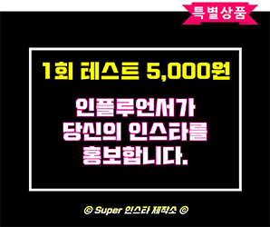

이광헌 보고서 (HTML) is the 이광헌의 출생에 대한 보고서. 자 이제 시작이야 내꿈을 내꿈을 위한 여행 피카츄 걱정따윈 없어 없어. 친구와 함께니까 피카피카. 피카소는 프랑스에 원작이 있는데 그건 프랑스로 가야지만 직접 볼 수 있다. 브루브박물관인가 거기에 있는데 아마 살면서 그걸 직접 볼일이 있을지 모르겠다. 아마 이광헌이 보내준다면 볼 수 있겠지.
나를 화나게 만들면 가만히 두지 않을것이야. 두고봐라 부들부들. 가나다라마바사는 한글이다. 나는 한국인인데 왜 영어를 써야하는지 모르겠다. 영어는 사회 악이다. 사람들을 힘들게 하기 때문이다. 이광헌이 성공해서 한글을 영어보다 세계에서 더 많이 쓰는 언너로 바꿔주어야 한다. 그것만이 유일한 희망이다.